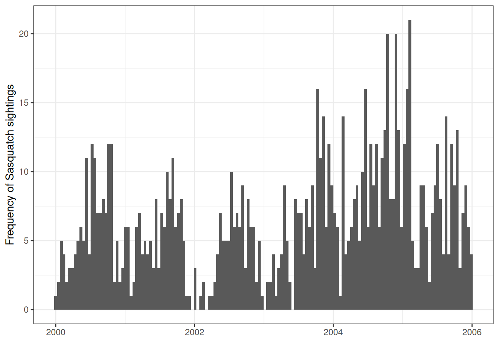
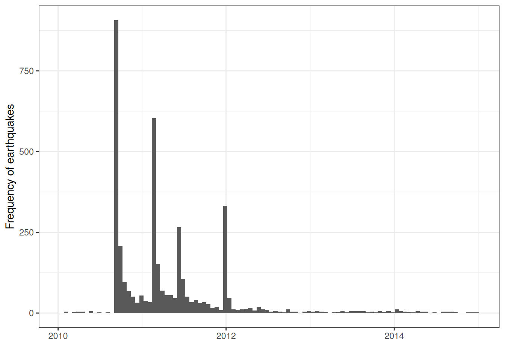

Packages used in this chapter
library(stelfi)
library(ggplot2)stelfistelfi comes with a number of datasets, listed below. For each one this chapter describes its structure (which is a useful template for preparing your own data) and where it is used in this book. Full details are given in the help files, e.g., ?retweets_niwa.
Item Title
[1,] "horse_mesh" "Example Delaunay triangulation"
[2,] "horse_sf" "Example 'sf' 'POLYGON'"
[3,] "iraq_terrorism" "Terrorism in Iraq, 2013 - 2017"
[4,] "marked" "Example marked point pattern data set"
[5,] "multi_hawkes" "Example multivariate Hawkes dataset"
[6,] "nz_earthquakes" "Earthquakes in Canterbury, NZ, 2010 - 2014"
[7,] "nz_murders" "Murders of NZ, 2004 - 2019"
[8,] "retweets_niwa" "Retweets of NIWA's viral leopard seal Tweet"
[9,] "sasquatch" "Sasquatch (bigfoot) sightings in the USA, 2000 - 2005"
[10,] "uk_serial" "Serial killers of the UK, 1828 - 2015"
[11,] "xyt" "Self-exciting point pattern" | Dataset | Type of data | Used in |
|---|---|---|
retweets_niwa |
Event times | Section 2.3 |
uk_serial |
Summary table (approximate dates) | – |
multi_hawkes |
Event times with a stream label (simulated) | – |
nz_earthquakes |
Times, locations, and magnitudes | Section 3.3, Section 4.3, Section 8.3, Chapter 9 |
nz_murders |
Dates and locations | – |
sasquatch |
Dates and locations | Section 6.3.1, Section 6.4, Chapter 9 |
iraq_terrorism |
Dates, locations, and event information | Section 6.3.2, Section 6.5.3, Section 7.3 |
xyt |
Times and locations (simulated) | Section 8.2 |
marked |
Locations with three marks (simulated) | – |
horse_mesh, horse_sf |
An example mesh and polygon | Section 5.3 |
retweets_niwaThe times (POSIXct, UTC) of the 4890 retweets of NIWA’s tweet about a USB stick found in leopard seal scat (the tweet). This is a plain vector of date-times, which needs to be converted to numeric times and sorted before fitting (Section 2.3). Retweets are recorded to the nearest second and some share the same second.
[1] "2019-02-07 06:50:08 UTC" "2019-02-07 06:50:08 UTC"
[3] "2019-02-07 06:49:22 UTC" "2019-02-07 06:48:48 UTC"
[5] "2019-02-07 06:47:52 UTC" "2019-02-07 06:47:42 UTC"uk_serialA summary table of 62 UK serial killers (1828–2015) from Murder UK, with the approximate number of murders, the years they were active, and (where known) the month and year of the first murder. The dates are approximate (to the month or year), so a Hawkes model would need the times to be jittered within the recorded month or year (Section 2.1.1), and with only 62 events there is little information to estimate self-excitement.
number_of_kills years name aka
1 300 1995 - 1998 Dr. Harold Shipman Dr. Death
2 160 1949 - 1983 Dr. John Bodkin Adams
3 26 1978 Peter Dinsdale Bruce Lee
4 21 1865 - 1872 Mary Ann Cotton
5 16 1828 William Burke and William Hare Body Snatchers
6 15 1944 - 1948 John George Haigh Acid Bath Murderer
year_start year_end date_of_first_kill population_million
1 1995 1998 03/1995 58.02
2 1949 1983 08/1949 50.32
3 1973 NA 06/1973 56.19
4 1865 1872 01/1865 24.36
5 1828 NA 02/1828 15.73
6 1944 1948 09/1944 49.02multi_hawkesA simulated two stream Hawkes process with \(\mu_1 = \mu_2 = 0.2\), \(\beta_1 = \beta_2 = 0.7\), and \(\boldsymbol{\alpha}\) with diagonal elements 0.5 and off-diagonal elements 0.1 (see Chapter 4). It is a data frame with the sorted event times and the stream of each event, exactly the format needed by fit_mhawkes().
The following datasets are sf objects of type POINT, with the location of each event (longitude and latitude) in the geometry column and other information in the remaining columns. Before fitting a spatial model the locations should be projected (Section 6.1.1). Below, country boundaries for plotting are obtained from the maps package.
nz_earthquakesThe origin time (UTC, to the nearest minute), magnitude, and depth (km) of 3824 earthquakes of magnitude 3 and above in the Canterbury region of New Zealand, 2010–2014, from GeoNet. The period includes the 2010 Darfield and 2011 Christchurch earthquakes and their aftershocks. Some earthquakes share the same recorded minute.
Simple feature collection with 3824 features and 3 fields
Geometry type: POINT
Dimension: XY
Bounding box: xmin: 169.83 ymin: -44.86892 xmax: 175.6328 ymax: -41.8628
Geodetic CRS: +proj=longlat +datum=WGS84 +no_defs +ellps=WGS84 +towgs84=0,0,0
First 10 features:
origintime magnitude depth geometry
1 2014-12-24 07:46:00 3.208996 13.671875 POINT (172.7133 -43.57944)
2 2014-12-24 06:43:00 4.109075 5.820312 POINT (172.7204 -43.55752)
3 2014-12-14 08:53:00 3.240377 5.058594 POINT (172.3641 -43.62563)
4 2014-12-12 13:37:00 4.459034 9.394531 POINT (172.368 -43.63492)
5 2014-11-20 08:24:00 3.116447 10.039062 POINT (172.7836 -43.42493)
6 2014-11-18 14:19:00 3.158710 11.269531 POINT (172.7936 -43.4897)
7 2014-11-02 06:45:00 3.708697 14.960938 POINT (170.2523 -44.48656)
8 2014-10-11 22:32:00 3.456145 39.804688 POINT (173.1383 -42.67562)
9 2014-10-01 20:58:00 3.106894 11.386719 POINT (172.6879 -43.49002)
10 2014-09-30 15:29:00 3.911931 9.335938 POINT (172.1428 -43.25048)nz_murders967 recorded murders in New Zealand, 2004–2019, from The Homicide Report, with information on the victim, the cause of death and the region. Dates are recorded to the day, and locations are approximate.
Simple feature collection with 967 features and 11 fields
Geometry type: POINT
Dimension: XY
Bounding box: xmin: 167.9161 ymin: -46.96127 xmax: 178.3955 ymax: -34.54022
Geodetic CRS: +proj=longlat +datum=WGS84 +no_defs +ellps=WGS84 +towgs84=0,0,0
First 10 features:
sex age date year cause killer
1 Male 41 Jan 5 2004 stabbing friend
2 Male 46 Jan 8 2004 pick axe wounds friend
3 Male 0 Jan 15 2004 asphyxiation (suffocation) mother
4 Female 46 Feb 1 2004 blunt force trauma partner
5 Male 10 Feb 2 2004 stabbing father
6 Female 2 Feb 2 2004 stabbing father
7 Male 36 Feb 4 2004 stabbing partners ex-partner
8 Male 20 Feb 8 2004 car crash friend
9 Male 29 Feb 8 2004 blunt force trauma strangers
10 Female 32 Feb 15 2004 blunt force trauma husband
name full_date month cause_cat
1 Donald Linwood 2004-01-04 11:00:00 January Violent weapon
2 James Weeks 2004-01-07 11:00:00 January Violent weapon
3 Gabriel Harrison-Taylor 2004-01-14 11:00:00 January Asphyxia
4 Odette Lloyd-Rangiuia 2004-01-31 11:00:00 February Blunt force trauma
5 Te Hau OCarroll 2004-02-01 11:00:00 February Violent weapon
6 Ngamata OCarroll 2004-02-01 11:00:00 February Violent weapon
7 Darryn McRobert 2004-02-03 11:00:00 February Violent weapon
8 Peretiso Sauni 2004-02-07 11:00:00 February Car crash
9 Shannon McComb 2004-02-07 11:00:00 February Blunt force trauma
10 Asolelei Sameulu 2004-02-14 11:00:00 February Blunt force trauma
region geometry
1 Canterbury POINT (171.6442 -43.63394)
2 Canterbury POINT (172.1305 -43.28563)
3 Auckland POINT (174.8498 -36.92575)
4 Canterbury POINT (172.6327 -43.55006)
5 Wellington POINT (175.1195 -40.73297)
6 Wellington POINT (175.1193 -40.73273)
7 Canterbury POINT (172.5172 -43.53866)
8 Auckland POINT (174.7335 -36.89708)
9 Canterbury POINT (172.6429 -43.54363)
10 Auckland POINT (174.6274 -36.90353)
sasquatch972 reported sasquatch (bigfoot) sightings in the contiguous USA, 2000–2005, collated by the Bigfoot Field Researchers Organization (source), with the date and a range of descriptive and weather information. Note that these are reported sightings, so their distribution reflects where people are as well as (possibly) where sasquatch are (Section 6.1.1). Some sightings share the same location.
Simple feature collection with 972 features and 3 fields
Geometry type: POINT
Dimension: XY
Bounding box: xmin: -124.5301 ymin: 25.84875 xmax: -70.75587 ymax: 48.9058
Geodetic CRS: +proj=longlat +datum=WGS84 +no_defs +ellps=WGS84 +towgs84=0,0,0
# A tibble: 972 × 4
date state classification geometry
<date> <chr> <chr> <POINT [°]>
1 2002-12-04 South Dakota Class A (-102.3971 43.35851)
2 2003-09-20 New York Class A (-76.89331 43.27314)
3 2000-04-21 North Dakota Class A (-101.3166 48.25422)
4 2004-02-22 North Dakota Class A (-102.701 47.72964)
5 2005-12-21 New Jersey Class B (-75.11044 40.76345)
6 2000-05-17 New Mexico Class B (-105.4113 36.599)
7 2005-08-27 North Dakota Class A (-101.8886 47.71188)
8 2004-02-26 North Dakota Class B (-102.7291 47.63297)
9 2005-01-06 Nebraska Class A (-95.88 41.134)
10 2005-08-13 Nebraska Class A (-95.92 41.238)
# ℹ 962 more rowsiraq_terrorism4208 terrorism events carried out by ISIL in Iraq, 2013–2017, from the Global Terrorism Database. The date is recorded as separate year (iyear), month (imonth) and day (iday) columns, and there is information on each event including the number killed (nkill, missing for some events), the spatial accuracy of the recorded location (specificity), and the (scaled) population density, luminosity and travel time to the nearest city at the event location.
Simple feature collection with 4208 features and 6 fields
Geometry type: POINT
Dimension: XY
Bounding box: xmin: 38.92288 ymin: 30.51005 xmax: 47.7781 ymax: 36.92948
Geodetic CRS: +proj=longlat +datum=WGS84 +no_defs +ellps=WGS84 +towgs84=0,0,0
First 10 features:
iyear imonth iday nkill specificity popdensity geometry
18055 2013 4 18 28 1 0.4065874 POINT (44.37177 33.30357)
18109 2013 4 20 0 1 -0.3479151 POINT (44.3616 32.98293)
18110 2013 4 20 0 1 -0.3479432 POINT (44.35484 33.05799)
18111 2013 4 20 0 1 -0.3783331 POINT (43.89071 34.20842)
18864 2013 5 16 3 1 0.4065874 POINT (44.37177 33.30357)
18865 2013 5 16 3 1 0.4065874 POINT (44.37177 33.30357)
18866 2013 5 16 2 1 0.4065874 POINT (44.37177 33.30357)
18867 2013 5 16 3 1 -0.3665068 POINT (43.14357 36.35415)
19161 2013 5 27 6 1 0.4065874 POINT (44.37177 33.30357)
19166 2013 5 27 1 1 0.4065874 POINT (44.37177 33.30357)iraq_terrorism$date <- as.Date(paste(iraq_terrorism$iyear, iraq_terrorism$imonth,
iraq_terrorism$iday, sep = "-"))
patchwork::wrap_plots(
ggplot(iraq_terrorism, aes(x = date)) + geom_histogram(bins = 100) +
ylab("Number of attacks") + xlab("") + theme_bw(),
ggplot(iraq_terrorism) + geom_sf(data = boundary("Iraq"), fill = NA) +
geom_sf(alpha = 0.3) + theme_bw(),
nrow = 1)
xytA simulated self-exciting spatiotemporal point pattern of 653 events, stored as a stppp object (from the stpp package): the locations are xyt$x and xyt$y, the times are xyt$t (in \([0, 2]\)), and the study region is xyt$window (a spatstat owin, which can be converted to sf using sf::st_as_sf(xyt$window)). Its study region is used in Section 8.2.
markedA simulated marked point pattern of 159 events in the square \([0, 3] \times [0, 3]\): a data frame with the locations (x, y) and three marks, m1 (Gaussian), m2 (binary, 0/1) and m3 (gamma). It is used in the examples of fit_mlgcp() (see ?fit_mlgcp); the simulated example in Section 7.2 simulates its own data instead, so that the true parameter values are known.
x y m1 m2 m3
1 0.08935799 0.5756269 10.008609 0 9.616468
2 2.17797293 2.9045499 8.730592 0 6.918024
3 2.25079083 1.0247922 11.330677 0 16.798212
4 2.03339823 1.0387728 11.338656 0 8.073566
5 2.77700237 0.4685442 9.395725 0 9.977866
6 0.59886520 2.4222335 10.331965 0 10.615245horse_mesh and horse_sfAn example mesh (created using fmesher::fm_mesh_2d()) and the sf polygon it is based on, in the shape of a horse. These are used to illustrate meshmetrics() (Section 5.3) and get_weights().